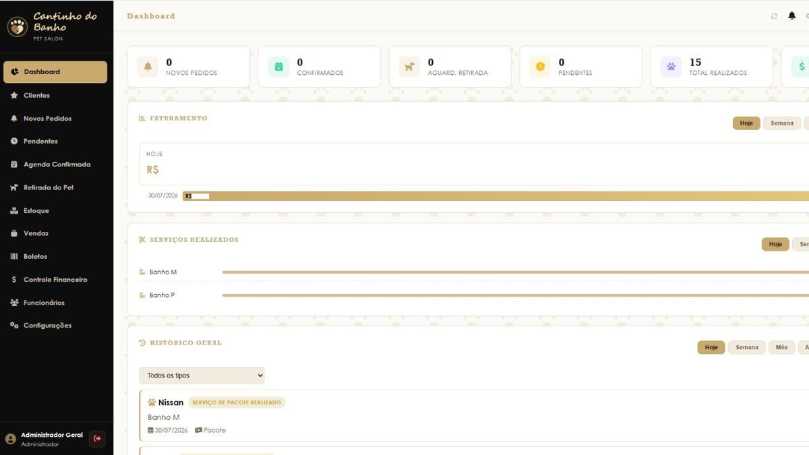

Sou desenvolvedora front-end. Construo sistemas e sites para pessoas
que precisam resolver algo concreto:
agendar um banho, rastrear um equipamento, controlar o dinheiro do mês.
Cuido do projeto do primeiro rascunho até o deploy.
Sou desenvolvedora front-end e trabalho principalmente com HTML, CSS e JavaScript,
chegando ao back-end quando o projeto pede: banco de dados, integração com API,
um servidor Node para segurar a lógica.
A maior parte do que construí saiu de um pedido real. Um pet shop que precisava
organizar agendamentos, uma operação de telecom sem controle dos equipamentos,
um cliente de consórcio sem presença online. Gosto desse recorte: entender o
problema de quem vai usar e entregar algo simples de operar.
Ferramentas do dia a dia
HTML
CSS
JavaScript
Node.js
MySQL
APIs REST
Git
GitHub Pages
projeto.jsfunção
</>
02
<projetos />
cinco sistemas no ar ou em construção

~/cantinho-do-banho
Cantinho do Banho
Site e sistema de gestão de um pet shop. A vitrine leva o cliente ao agendamento; o painel
interno cuida de pedidos, agenda, retirada do pet, estoque, vendas, boletos, funcionários e
faturamento, com os dados no MySQL.
Controle logístico de equipamentos de telecom. Cada entrada, saída e evento fica registrado
com equipamento, localização, responsável, motivo e horário, e tudo volta pela busca, para
saber onde cada aparelho esteve.
Site institucional de uma consultoria de consórcios. Apresenta as cartas de crédito para
imóvel, veículo, caminhão e máquina agrícola e conduz o visitante direto à simulação.
Controle financeiro pessoal e a dois: entradas, gastos, saldo do mês, contas pagas e renda
comprometida, com a divisão por categoria e o comparativo dos últimos seis meses na mesma tela.
Central de apoio ao suporte de telecom. O atendente pergunta em linguagem natural e a resposta
vem de um servidor Node que consulta a API do Gemini, com os temas organizados por redes,
fibra óptica, 4G/5G, protocolos, métricas e SLA e regulatório.